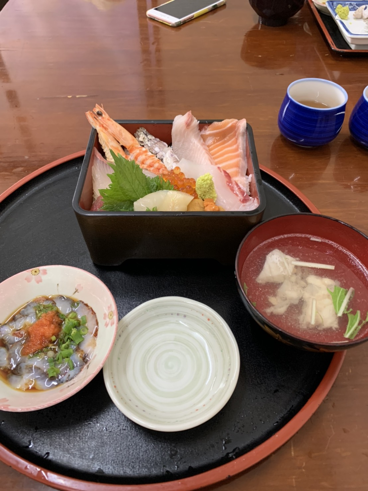

Favorite
1.MUSIC> 2.GAME> 3.FOODS
1.MUSIC
BUMP OF CHIKCEN
中学生の頃、「天体観測」がHIT、修学旅行中のバス内で聞いていたら、友人から
「BUMPのアルバムは聞いた？」と聞かれ、「まだ聞いたことないー」と言ったところ、
「いっぺん聞いてみ」と言われ、聞いたところ大ハマリ。アルバムも全て購入しています。
木村カエラ
左のジャケットは大学生の頃に聞いたアルバムで「scratch」 それまで木村カエラにあまり興味はなかったが
このアルバムでハマりました。独特な世界観のCDで、入っている曲ほぼ全て好きです。
それ以降のアルバム（特に右の「8EIGHT8」）もお気に入りです。
1.MUSIC> 2.GAME> 3.FOODS
2.GAME
PLAY STATION4/SWITCH
1.MUSIC> 2.GAME> 3.FOODS
3.FOODS
食べ歩き
美味しいものを食べに行くのが大好きです！（ただ好き嫌いは多いです..）
和洋中万遍なく好きで、昔からストレスが溜まると、旨いものを食べにいって発散してきました。
ただ、去年からコロナ禍で外食が制限される様になり、結構悲しんでます。
でも最近は「ウーバー・イーツ」「Walt」「フードパンダ」などの宅配が充実してきているので、
それで好きなものを頼んで食べれる様になったので、かなりマシになってきました。
早くコロナが収まって飯を食いに行きたい...
